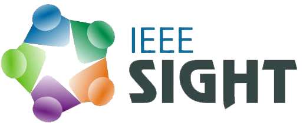

Special Interest Group on Humanitarian Technology

NITK IEEE SIGHT(Special Interest Group on Humanitarian Technology) is a group that caters to the guiding philosophy of IEEE -‘Advancing Technology for Humanity’. We believe that the problems of today can be solved effectively through technology. So, we take up activities that benefit the society directly.
We focus on taking up projects in the open-source platforms. This helps us drive down the cost of the final product and make the solution affordable to a large section of people.
Our current focus is on providing educational solutions because we believe that a revolutionary change in the educational system would bring about a revolutionary change in the society.
Talking about our achievements, one of the most successful projects in the NIT-K IEEE Student Chapter was the ‘Smart SlateProject’. It focused on designing a smart tactile interface that could be used to assist blind students in learning about various 3-D shapes.
SIGHT is supported by the other SIGs – Circuits and Systems Society (CAS), Computer Society, Signal Processing Society (SPS), Robotics and Automation Society (RAS) & Mechanical Automation and Chemical SIG (MACh). Thanks to a strong and dedicated multi-disciplinary team, we have been successful in doing projects that have a real positive impact!